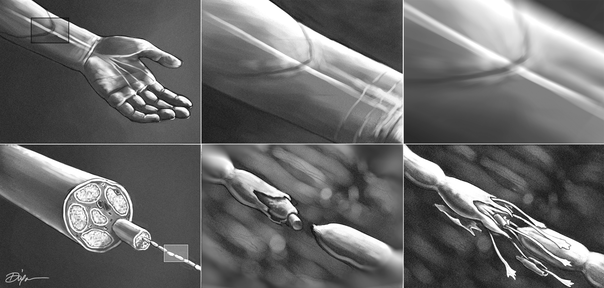

Hand Transplantation & Nerve Regeneration
The transplant
During hand transplant surgery, bone, blood vessels, muscles and tendons, nerves, and soft tissues from the donor must be attached to the recipient in a step-wise manner. First, the bones must be connected with plates and screws, after which the muscles and tendons can be attached. Veins and arteries are connected next, allowing blood to flow to the donor hand. At this stage, a recipient's nerves are connected to the nerve pathways of the donor arm. When surgeons reconnect the nerves, it must be done with care. There are distinct bundles of sensory and motor nerves, and these bundles must line up appropriately for the nerves to function properly. Finally, the remaining tissues are attached and the skin is sutured up.

After the operation, nerve regeneration, the process of growth and repair in the peripheral nervous system, must take place to regain sensation and motor function in the donor hand.
When nerves become injured by an amputation, they undergo a process called Wallerian degeneration. This causes a severed axon that is distal to the injury (farther from the cell body) to degenerate within 1-2 days. As soon as 1 day after injury, the proximal axon that is connected to the cell body begins regenerating as Schwann cells begin to clear the debris. A patient's nerves can grow at a rate of about 1-2mm per day, or about an inch per month.
Peripheral nerve regeneration after hand transplantation
Peripheral nerve regeneration is the process of growth and healing in the peripheral nervous system after a nerve injury. When an axon becomes severed, the proximal segment of the host nerve, the end still attached to the cell body, begins to degenerate until Schwann cells clear cellular debris from the injury, a process that may take up to several months.
Once the debris has been cleared, the remaining axon begins to sprout smaller axonal processes. At the tip of each axon, there is a hand-like projection called a growth cone. Growth cones direct movement in the presence of chemicals, called axon guidance molecules, which attract or repel axons.
After hand transplantation, the host nerve uses the donor nerve as a scaffold to direct axon regeneration towards its muscular target. As regeneration begins along the donor nerve, host Schwann cells must migrate into the graft to support axon regeneration. Some of the donor Schwann cells may also remain and provide support.
While the nerve is repaired, degeneration of the donor nerve scaffold takes place. Fully regenerated nerves will ensure optimal functional recovery.
